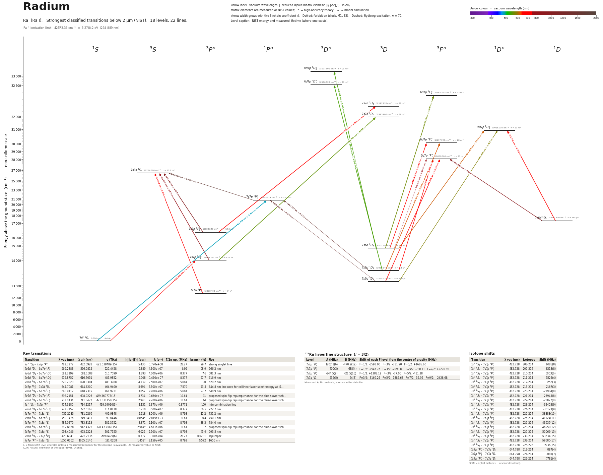

Radium energy level diagram
Energy levels and transitions of neutral radium (Ra I): the 22 strongest classified lines below 2 µm from the NIST Atomic Spectra Database and the 18 levels they connect, each line with its vacuum wavelength, frequency and, for 22 of them, the reduced dipole matrix element derived from the NIST transition rate. Measured lifetimes, transition rates, hyperfine constants and isotope shifts from the literature are included, each with its citation.
Hover a line or a level to isolate it, click to keep it selected. Scroll to zoom, drag to move.

Download: diagram (PDF) diagram (SVG) transitions (CSV) levels (CSV) source code

Key transitions of radium
| Transition | λ vac (nm) | λ air (nm) | ν (THz) | |⟨J‖er‖J′⟩| (ea₀) | A (s⁻¹) | Γ/2π up. (MHz) | branch (%) | Use |
|---|---|---|---|---|---|---|---|---|
| 7s2 1S0 – 7s7p 1P°1 | 482.7277 | 482.5928 | 621.038489(15) | 5.430 | 1.770e+08 | 28.27 | 99.7 | strong singlet line |
| 7s6d 3D3 – 6d7p 3F°4 | 566.2383 | 566.0812 | 529.4458 | 5.889 | 4.300e+07 | 6.92 | 98.9 | 566.2 nm |
| 7s6d 3D1 – 6d7p 1D°2 | 581.3199 | 581.1588 | 515.7099 | 1.393 | 4.000e+06 | 8.377 | 7.6 | 581.3 nm |
| 7s6d 3D3 – 6d7p 1D°2 | 616.8757 | 616.7051 | 485.9852 | 2.908 | 1.460e+07 | 8.377 | 27.7 | 616.9 nm |
| 7s6d 3D2 – 6d7p 3F°3 | 620.2020 | 620.0304 | 483.3788 | 4.539 | 2.500e+07 | 5.684 | 70 | 620.2 nm |
| 7s7p 3P°2 – 7s7d 3D3 | 644.7981 | 644.6200 | 464.9400 | 5.694 | 3.500e+07 | 7.579 | 73.5 | 644.8 nm line used for collinear laser spectroscopy at IS… |
| 7s6d 3D3 – 6d7p 3F°3 | 648.9112 | 648.7319 | 461.9931 | 3.057 | 9.900e+06 | 5.684 | 27.7 | 648.9 nm |
| 7s6d 3D1 – 6d7p 3F°2 | 698.2151 | 698.0226 | 429.369773(15) | 3.734 | 1.660e+07 | 10.61 | 31 | proposed spin-flip repump channel for the blue-slower sch… |
| 7s6d 3D2 – 6d7p 3F°2 | 712.0434 | 711.8472 | 421.031151(15) | 2.940 | 9.700e+06 | 10.61 | 64 | proposed spin-flip repump channel for the blue-slower sch… |
| 7s2 1S0 – 7s7p 3P°1 | 714.3185 | 714.1217 | 419.69016(3) | 1.131 | 2.370e+06 | 0.3771 | 100 | intercombination line |
| 7s6d 1D2 – 6d7p 1D°2 | 722.7157 | 722.5165 | 414.8138 | 5.710 | 3.500e+07 | 8.377 | 66.5 | 722.7 nm |
| 7s7p 3P°0 – 7s8s 3S1 | 731.2283 | 731.0269 | 409.9848 | 2.218 | 8.500e+06 | 8.793 | 15.2 | 731.2 nm |
| 7s6d 3D3 – 6d7p 3F°2 | 750.1476 | 749.9411 | 399.6446 | 0.054* | 2.815e+03 | 10.61 | 0.4 | 750.1 nm |
| 7s7p 3P°1 – 7s8s 3S1 | 784.0270 | 783.8113 | 382.3752 | 3.871 | 2.100e+07 | 8.793 | 38.3 | 784.0 nm |
| 7s6d 1D2 – 6d7p 3F°2 | 912.6828 | 912.4323 | 328.473887(15) | 2.964* | 4.683e+06 | 10.61 | 5 | proposed spin-flip repump channel for the blue-slower sch… |
| 7s7p 3P°2 – 7s8s 3S1 | 993.4946 | 993.2223 | 301.7555 | 6.025 | 2.500e+07 | 8.793 | 45.9 | 993.5 nm |
| 7s6d 3D1 – 7s7p 1P°1 | 1428.6041 | 1428.2136 | 209.8499(6) | 0.377 | 3.300e+04 | 28.27 | 0.0231 | repumper |
| 7s7p 1P°1 – 7s8s 3S1 | 1656.0662 | 1655.6140 | 181.0268 | 1.458* | 3.159e+05 | 8.793 | 0.572 | 1656 nm |
λ, ν from NIST level energies unless a measured frequency for this isotope is available. A: measured value or NIST. Γ/2π: natural linewidth of the upper level, 1/(2πτ).
223Ra hyperfine structure (I = 3/2)
| Level | A (MHz) | B (MHz) | Shift of each F level from the centre of gravity (MHz) |
|---|---|---|---|
| 7s7p 3P°1 | 1202.1(6) | -470.2(12) | F=1/2: -3593.00 F=3/2: -731.90 F=5/2: +1685.60 |
| 7s7p 3P°2 | 700(3) | 688(4) | F=1/2: -2545.76 F=3/2: -2098.80 F=5/2: -780.11 F=7/2: +2270.93 |
| 7s7p 1P°1 | -344.5(9) | 421.5(16) | F=1/2: +1388.12 F=3/2: -77.00 F=5/2: -411.38 |
| 7s7d 3D3 | 536(5) | 74(3) | F=3/2: -3169.26 F=5/2: -1885.68 F=7/2: -36.95 F=9/2: +2428.68 |
Measured A, B constants; sources in the data file.
Isotope shifts
| Transition | λ vac (nm) | Isotopes | Shift (MHz) |
|---|---|---|---|
| 7s2 1S0 – 7s7p 1P°1 | 482.728 | 208-214 | 8485(8) |
| 7s2 1S0 – 7s7p 1P°1 | 482.728 | 209-214 | 8313(8) |
| 7s2 1S0 – 7s7p 1P°1 | 482.728 | 210-214 | 6003(6) |
| 7s2 1S0 – 7s7p 1P°1 | 482.728 | 211-214 | 5522(4) |
| 7s2 1S0 – 7s7p 1P°1 | 482.728 | 212-214 | 3256(3) |
| 7s2 1S0 – 7s7p 1P°1 | 482.728 | 213-214 | 2167(3) |
| 7s2 1S0 – 7s7p 1P°1 | 482.728 | 220-214 | -21904(8) |
| 7s2 1S0 – 7s7p 1P°1 | 482.728 | 221-214 | -25945(8) |
| 7s2 1S0 – 7s7p 1P°1 | 482.728 | 222-214 | -28827(8) |
| 7s2 1S0 – 7s7p 1P°1 | 482.728 | 223-214 | -32453(9) |
| 7s2 1S0 – 7s7p 1P°1 | 482.728 | 224-214 | -35123(9) |
| 7s2 1S0 – 7s7p 1P°1 | 482.728 | 225-214 | -38888(10) |
| 7s2 1S0 – 7s7p 1P°1 | 482.728 | 226-214 | -41124(11) |
| 7s2 1S0 – 7s7p 1P°1 | 482.728 | 227-214 | -43937(12) |
| 7s2 1S0 – 7s7p 1P°1 | 482.728 | 228-214 | -46950(12) |
| 7s2 1S0 – 7s7p 1P°1 | 482.728 | 229-214 | -50066(15) |
| 7s2 1S0 – 7s7p 1P°1 | 482.728 | 230-214 | -53634(15) |
| 7s2 1S0 – 7s7p 1P°1 | 482.728 | 232-214 | -59585(17) |
| 7s2 1S0 – 7s7p 1P°1 | 482.728 | 225-226 | 2236(15) |
| 7s7p 3P°2 – 7s7d 3D3 | 644.798 | 212-214 | -887(4) |
| 7s7p 3P°2 – 7s7d 3D3 | 644.798 | 221-214 | 7001(7) |
| 7s7p 3P°2 – 7s7d 3D3 | 644.798 | 222-214 | 7781(4) |
Shift = ν(first isotope) − ν(second isotope).
Listed Ra transitions below 2 µm
| Lower level | Upper level | λ vacuum (nm) | λ air (nm) | ν (THz) | Type | |⟨J‖er‖J′⟩| (ea₀) | A (s⁻¹) | Branching (%) | Source of matrix element / A |
|---|---|---|---|---|---|---|---|---|---|
| 7s2 1S0 | 7s7p 1P°1 | 482.7277 | 482.5928 | 621.0385 | E1 | 5.430 NIST | 1.770e+08 NIST | 99.7 | NIST ASD (accuracy AA) |
| 7s6d 3D2 | 6d7p 3D°2 | 540.1732 | 540.0231 | 554.9932 | E1 | 3.637 NIST | 3.400e+07 NIST | 44.2 | NIST ASD (accuracy D+) |
| 7s6d 3D3 | 6d7p 3D°3 | 540.8300 | 540.6796 | 554.3193 | E1 | 4.791 NIST | 4.200e+07 NIST | 88.2 | NIST ASD (accuracy D+) |
| 7s7p 3P°1 | 7s7d 3D2 | 555.7395 | 555.5852 | 539.4478 | E1 | 4.268 NIST | 4.300e+07 NIST | 81.7 | NIST ASD (accuracy D+) |
| 7s6d 3D3 | 6d7p 3F°4 | 566.2383 | 566.0812 | 529.4458 | E1 | 5.889 NIST | 4.300e+07 NIST | 98.9 | NIST ASD (accuracy C+) |
| 7s6d 3D1 | 6d7p 1D°2 | 581.3199 | 581.1588 | 515.7099 | E1 (intercombination) | 1.393 NIST | 4.000e+06 NIST | 7.6 | NIST ASD (accuracy C+) |
| 7s6d 3D3 | 6d7p 1D°2 | 616.8757 | 616.7051 | 485.9852 | E1 (intercombination) | 2.908 NIST | 1.460e+07 NIST | 27.7 | NIST ASD (accuracy C+) |
| 7s6d 3D2 | 6d7p 3F°3 | 620.2020 | 620.0304 | 483.3788 | E1 | 4.539 NIST | 2.500e+07 NIST | 70 | NIST ASD (accuracy C+) |
| 7s7p 3P°2 | 7s7d 3D3 | 644.7981 | 644.6200 | 464.9400 | E1 | 5.694 NIST | 3.500e+07 NIST | 73.5 | NIST ASD (accuracy D+) |
| 7s6d 3D3 | 6d7p 3F°3 | 648.9112 | 648.7319 | 461.9931 | E1 | 3.057 NIST | 9.900e+06 NIST | 27.7 | NIST ASD (accuracy C+) |
| 7s6d 3D1 | 6d7p 3F°2 | 698.2151 | 698.0226 | 429.3698 | E1 | 3.734 NIST | 1.660e+07 NIST | 31 | NIST ASD (accuracy C+) |
| 7s6d 3D2 | 6d7p 3F°2 | 712.0434 | 711.8472 | 421.0312 | E1 | 2.940 NIST | 9.700e+06 NIST | 64 | NIST ASD (accuracy C+) |
| 7s2 1S0 | 7s7p 3P°1 | 714.3185 | 714.1217 | 419.6902 | E1 (intercombination) | 1.131 measured | 2.370e+06 measured | 100 | experimental rate 2.37(12)[6] s^-1 attributed to Scielzo et al. 2006 in Table 1 of Bieron… |
| 7s6d 1D2 | 6d7p 1D°2 | 722.7157 | 722.5165 | 414.8138 | E1 | 5.710 NIST | 3.500e+07 NIST | 66.5 | NIST ASD (accuracy C+) |
| 7s7p 3P°0 | 7s8s 3S1 | 731.2283 | 731.0269 | 409.9848 | E1 | 2.218 NIST | 8.500e+06 NIST | 15.2 | NIST ASD (accuracy C+) |
| 7s6d 3D3 | 6d7p 3F°2 | 750.1476 | 749.9411 | 399.6446 | E1 | 0.0541 theory | 2.815e+03 theory | 0.4 | UDel Portal for High-Precision Atomic Data and Computation (Safronova group), Ra I tables… |
| 7s7p 3P°1 | 7s8s 3S1 | 784.0270 | 783.8113 | 382.3752 | E1 | 3.871 NIST | 2.100e+07 NIST | 38.3 | NIST ASD (accuracy C+) |
| 7s6d 1D2 | 6d7p 3F°2 | 912.6828 | 912.4323 | 328.4739 | E1 (intercombination) | 2.964 theory | 4.683e+06 theory | 5 | UDel Portal for High-Precision Atomic Data and Computation (Safronova group), Ra I tables… |
| 7s7p 3P°2 | 7s8s 3S1 | 993.4946 | 993.2223 | 301.7555 | E1 | 6.025 NIST | 2.500e+07 NIST | 45.9 | NIST ASD (accuracy C+) |
| 7s6d 3D1 | 7s7p 1P°1 | 1428.6041 | 1428.2136 | 209.8499 | E1 (intercombination) | 0.377 NIST | 3.300e+04 NIST | 0.0231 | NIST ASD (accuracy D+) |
| 7s6d 3D2 | 7s7p 1P°1 | 1487.7246 | 1487.3181 | 201.5107 | E1 (intercombination) | 0.771 theory | 1.218e+05 theory | 0.0685 | UDel Portal for High-Precision Atomic Data and Computation (Safronova group), Ra I tables… |
| 7s7p 1P°1 | 7s8s 3S1 | 1656.0662 | 1655.6140 | 181.0268 | E1 (intercombination) | 1.458 theory | 3.159e+05 theory | 0.572 | UDel Portal for High-Precision Atomic Data and Computation (Safronova group), Ra I tables… |
Reduced dipole matrix elements follow the convention A = ω³|d|²/(3πε₀ħc³(2J′+1)), with J′ the upper level. Tags show where a number comes from: measured, NIST compilation, high-accuracy theory, or a model calculation.
Ra energy levels
Ra⁺ ionisation limit 42573.36 cm⁻¹ = 5.27842 eV (234.889 nm)
Sources
- Bieron, Indelicato, Jonsson, Eur. Phys. J. Special Topics 144, 75 (2007) [arXiv:physics/0…
- Booth, Rabga, Ready, Bailey, Bishof, Dietrich, Greene, Mueller, O'Connor, Singh, Spectroc…
- Booth, Rabga, Ready, Bailey, Bishof, Dietrich, Greene, Mueller, O'Connor, Singh, Spectroc…
- Dzuba & Flambaum, J. Phys. B 40, 227 (2007) [arXiv:physics/0610119]; Table 3 (CI + MBPT)
- Dzuba & Ginges, Phys. Rev. A 73, 032503 (2006) [arXiv:physics/0511199], Table VI (CI + ma…
- Guest, Scielzo, Ahmad, Bailey, Greene, Holt, Lu, O'Connor, Potterveld, Phys. Rev. Lett. 9…
- Guest, Scielzo, Ahmad, Bailey, Greene, Holt, Lu, O'Connor, Potterveld, Phys. Rev. Lett. 9…
- Guest, Scielzo, Ahmad, Bailey, Greene, Holt, Lu, O'Connor, Potterveld, Phys. Rev. Lett. 9…
- NIST ASD
- NIST ASD level energies
- Santra, Dammalapati, Groot, Jungmann, Willmann, Phys. Rev. A 90, 040501(R) (2014) [arXiv:…
- Scielzo, Guest, Schulte, Ahmad, Bailey, Bowers, Holt, Lu, O'Connor, Potterveld, Phys. Rev…
- Trimble, Sulai, Ahmad, Bailey, Graner, Greene, Holt, Korsch, Lu, Mueller, O'Connor, Phys.…
- UDel Portal for High-Precision Atomic Data and Computation (Safronova group), Ra I tables…
- UDel Portal for High-Precision Atomic Data and Computation (Safronova group), Ra I tables…
- UDel Portal for High-Precision Atomic Data and Computation (Safronova group), Ra I tables…
- UDel Portal for High-Precision Atomic Data and Computation (Safronova group), Ra I tables…
- UDel Portal for High-Precision Atomic Data and Computation (Safronova group), Ra I tables…
- Wendt, Ahmad, Klempt, Neugart, Otten, Stroke, Z. Phys. D 4, 227 (1987) (collinear laser s…
- Wendt, Ahmad, Klempt, Neugart, Otten, Stroke, Z. Phys. D 4, 227 (1987) (collinear laser s…
- Wendt, Ahmad, Klempt, Neugart, Otten, Stroke, Z. Phys. D 4, 227 (1987) (collinear laser s…
- experimental rate 2.37(12)[6] s^-1 attributed to Scielzo et al. 2006 in Table 1 of Bieron…
Level energies are the NIST ASD values (226Ra; NIST adopts Santra et al. for 1P1 and Guest/Scielzo et al. for 3P1). rme_J_ea0 is |<J||D||J'>| in e a0 in the symmetric convention of the Safronova papers / UDel portal, A = 2.02613e18 |d|^2 / ((2J'+1) lambda^3[Angstrom]), J' = upper level; Dzuba & Flambaum (their Eq. 12) and Dzuba & Ginges use the same convention, so no conversion was needed. The UDel portal does carry neutral Ra (element key "Ra1": 48 matrix elements, 24 rates, lifetimes; data service https://atom.ece.udel.edu/graphql behind https://www1.udel.edu/atom/); all its Ra I numbers are theory except the 3P1 lifetime, which it attributes to Scielzo et al. It also carries Ra+ (key "Ra2"), not used here. Isotope shifts are nu(first) - nu(second); the ISOLDE tables are referenced to 214Ra, and for odd isotopes refer to hyperfine centres of gravity. Hyperfine A, B signs as printed in the compilation. frequency_THz entries are for 226Ra (I = 0, no hyperfine structure); frequency_THz_225 entries are centres of gravity derived here from the measured hyperfine component and A, and the measured components themselves are under hyperfine_component_frequency_THz. Extra fields beyond the schema: ionization_energy, linewidth_MHz and measured_energy_cm on levels, oscillator_strength, hyperfine_component_frequency_THz, wavenumber_cm inside frequency entries, half_life / mu / Q in isotopes (abundance_percent is null: no stable isotope). Radium has no stable isotope; 226Ra (1600 y) and
Atoms with measured data
- Lithium-632 levels, 85 lines
- Lithium-732 levels, 85 lines
- Beryllium-917 levels, 26 lines
- Sodium-2336 levels, 106 lines
- Magnesium-2418 levels, 61 lines
- Magnesium-2518 levels, 61 lines
- Potassium-3934 levels, 84 lines
- Potassium-4034 levels, 84 lines
- Potassium-4134 levels, 84 lines
- Calcium-4035 levels, 61 lines
- Calcium-4335 levels, 61 lines
- Rubidium-8536 levels, 94 lines
- Rubidium-8736 levels, 94 lines
- Strontium-8740 levels, 70 lines
- Strontium-8840 levels, 70 lines
- Caesium-13331 levels, 79 lines
- Barium-13744 levels, 89 lines
- Barium-13844 levels, 89 lines
- Dysprosium-16339 levels, 55 lines
- Dysprosium-16439 levels, 55 lines
- Ytterbium-17118 levels, 26 lines
- Ytterbium-17418 levels, 26 lines